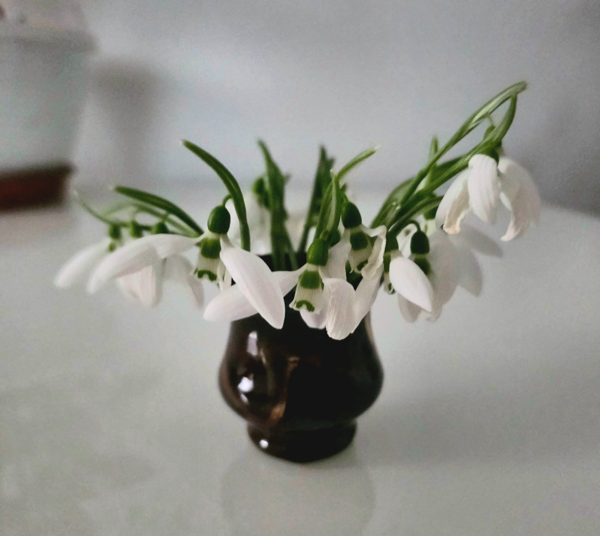

22 MARTIE 2026 · Lăcrămioarele mele
Post echinocțiul sufletului meu
— poem —

© Violeta-Mirela Mareș · 22 martie 2026
Dănuței
Schimbam
aroma fiecărei dimineți,
zâmbetul născut din lacrimă
și fiecare anotimp al meu.
Pe
Culoarea senin
a cerului ochilor,
chipul solar
și lumina sufletului.
Am primit în ziua post echinocțiului
primăvara ...la o cafea.
Violeta-Mirela Mareș
22 martie 2026 · ziua post echinocțiului de primăvară
← Înapoi la Lăcrămioarele mele